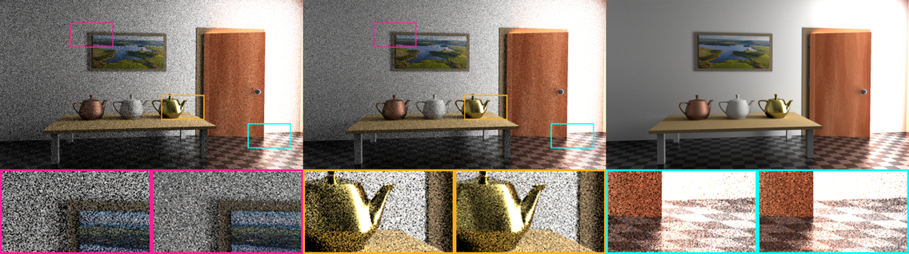
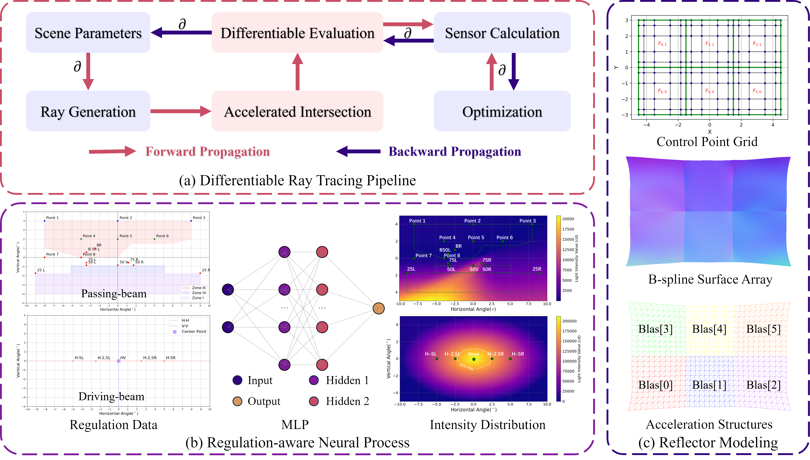

Researches
科研项目
[TOG21]A Compact Representation of Measured BRDFs Using Neural Processes
基于神经过程的测量BSDF数据紧凑表示

-
We proposed a neural representation of measured BRDFs.
我们提出了一种面向测量BRDF数据集的神经表示方法。
-
We developed a real-time path tracing renderer based on OptiX.
我们基于OptiX开发了一个实时路径追踪渲染器。
-
We implemented the sample and evaluation of tabulated BRDF data in OptiX kernel.
我们在OptiX核代码中实现了表格BRDF数据的采样和计算。
[paper]
[TVC24]Refined tri-directional path tracing with generated light portal
基于生成光线通道的三向路径追踪算法改进

-
We proposed a refined algorithm of TDPT without BDPT.
我们提出了一种改进的三向路径追踪算法，无需双向路径连接。
-
We designed a automatic pipeline based on radiosity to generate light portal.
我们设计了一个基于辐射度的自动化光线通道生成流水线。
-
We improved the performance of path tracing on complex scenes.
我们显著提升了复杂场景路径追踪的绘制性能。
[paper]
[OE25]Regulation-aware freeform headlamp reflector design with differentiable ray tracing
基于可微分光线追踪的自由曲面车灯反射器设计

-
We proposed a differentiable model of freeform optics reflector.
我们提出了一个可微分的自由曲面光学反射器模型表示方法。
-
We designed a hybrid framework of differentiable evaluation and accelerated ray tracing.
我们设计了一个混合框架，结合了可微分计算和光线追踪加速。
-
We trained a neural process to generate light intensity distribution based on regulation.
我们训练了一个神经过程，用于生成基于车灯法规的光线强度分布。
[paper]